Volumetric segmentation from sparse and dense labels
Abstract
A volume needs a class at every voxel even when annotations cover only a few slices. This report checks3D U-Net and V-Net tensor derivatives and sparse/overlap objectives,then visibly fits complete compact models to noisy oblique ellipsoids and shows actual orthogonal held-out slices.
Source example: examples/cpp/source/nn/1_convolutional_neural_networks/1.7_segmentation/volumetric_segmentation.cpp.
The method
3D convolutional encoders learn volumetric features;learned up-convolutions and skip connections recover voxel resolution. Sparse weighted CE excludes unannotated voxels,while squared Dice trains dense foreground overlap. Explicit Adam and restored validation checkpoints keep the fitting and evaluation policies visible.
The concept diagram below is drawn by dm::graphics::Diagram. Its editable C++
source is the complete block below; regeneration uses the same datamunge toolchain
as the numerical examples. Exports consume the saved local SVG.
#include <dm/dm.hpp>
int main() {
std::filesystem::create_directories("build");
dm::graphics::Diagram diagram;
diagram.node("n0", {0.0, 0}, "Volume and labels\nDense or sparse truth");
diagram.node("n1", {5.2, 0}, "Encode and recover\nLearn voxel features");
diagram.node("n2", {10.4, 0}, "Visible Adam loop\nRestore and inspect");
diagram.edge("n0", "n1").edge("n1", "n2");
diagram.save_svg("build/volumetric_segmentation_concept.svg");
}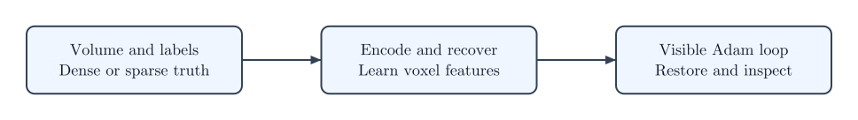
Executed tensor architecture
This figure executes the inference configuration shown in the code, using a zero-valued shape probe without fitting or loading a checkpoint. Named stage boundaries group whole subgraphs where available; other nodes retain functional-layer detail. Exact batch-inclusive shapes and reachable parameter totals come from the trace. Shared linear scales map spatial dimensions and channel counts to blocks; the one-pixel visibility floor is disclosed in the legend. Labels use compact monospace text, rotate counterclockwise and sit beside their own glyphs. Arrows flow left to right; wide diagrams scroll at native size on the website.
#include <dm/dm.hpp>
int main() {
namespace n = dm::nn;
namespace m = n::models;
n::set_num_threads(2);
std::filesystem::create_directories("build");
n::ParameterStore p(17), state(18);
m::VNetConfig c;
c.base = 2;
n::Module architecture_model(
[&](const n::Tensor& image) { return m::VNet(p, image, c).logits; },
"Volumetric segmentation from sparse and dense labels");
n::ModelPlotOptions options;
options.style = n::ModelPlotStyle::Flow;
options.detail = n::ModelPlotDetail::Blocks;
options.labels = {.type = n::ModelPlotLabel::NameAndShape, .size = 12, .wrap = 24};
options.spacing = {.layer = 24, .lane = 12, .label = 8, .margin = 20};
options.sizing.spatial_size = 96;
options.sizing.channel_size = 42;
options.sizing.minimum_extent = 1;
options.opacity = .8;
const auto diagram = architecture_model.plot(n::zeros({1, 32, 32, 32, 1}), options);
diagram.save_svg("build/volumetric_segmentation_architecture.svg");
std::print(
"{} displayed nodes; {} reachable learned values.\n",
diagram.nodes().size(),
diagram.parameter_count());
}135 displayed nodes; 1019348 reachable learned values.
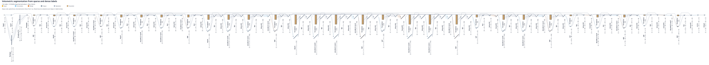
Sparse labels must have exactly zero loss gradient
A3D segmentation model assigns a class to every voxel,but only some slices may be annotated. Sparse softmax CE masks unannotated voxels before weight normalization. With class weight \(w_y\),annotation indicator \(a_i\),and \(Z=\max(\sum_i a_iw_{y_i},10^{-6})\),
For three zero-logit voxels with labels0,2,255 and weights1,2,4,the loss is log(3),normalization is5,and the last voxel has exactly zero derivative. Label255 means unannotated;other labels outside the class range are ignored too. An entirely unannotated volume gives a differentiable zero loss. The native checks independently verify every derivative,including all-void cases.
#include <dm/dm.hpp>
int main() {
namespace n = dm::nn;
auto logits = n::zeros({1, 1, 1, 3, 3}).requires_grad_();
const auto labels = n::from_vector(std::vector<std::int64_t>{0, 2, 255}, {1, 1, 1, 3});
const auto loss = n::models::SparseVolumeCE(logits, labels, 3, n::tensor({1., 2., 4.}));
const auto gradient = n::grad(loss, {logits})[0].reshape({3, 3});
if (std::abs(loss.item() - std::log(3.)) > 1e-7 ||
n::sum(n::abs(n::slice_axis(gradient, 0, 2, 3))).item() != 0)
return 1;
auto p = n::plot_tensor_map(n::reverse(gradient, {0}), -.6, .6);
p.title("Sparse voxel logit derivatives");
p.x_label("class0,1,2");
p.y_label("voxel0,1,2 from bottom");
p.size(800, 600);
std::filesystem::create_directories("build");
p.save_svg("build/volumetric_segmentation_sparse.svg");
std::print("Loss {:.9f}=log(3);annotated weight sum5;third voxel label255 has exactly zero "
"gradient. No fitting.\n",
loss.item());
}Loss 1.098612309=log(3);annotated weight sum5;third voxel label255 has exactly zero gradient. No fitting.
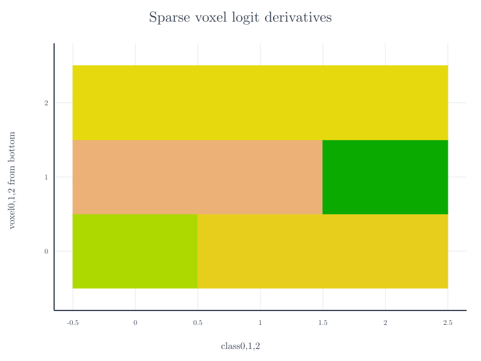
Squared-denominator Dice is a different objective
V-Net trains foreground overlap directly. For valid voxels of volume n,write \(A_n=2\sum_i p_it_i+\epsilon\),\(B_n=\sum_i(p_i^2+t_i^2)+\epsilon\), with \(\epsilon=10^{-6}\). Average only volumes with at least one valid label:
Unannotated voxel derivatives remain zero. Perfect foreground probabilities have zero loss,and entirely void volumes are excluded. This loss is not linear Dice or the thresholded held-out Dice metric. The example below uses two tiny volumes and one void voxel;the native independent quotient-rule oracle checks every probability derivative.
#include <dm/dm.hpp>
int main() {
namespace n = dm::nn;
auto probability = n::tensor({.2, .5, .9, .7, .1, .4}, {2, 1, 1, 3}).requires_grad_();
const auto labels =
n::from_vector(std::vector<std::int64_t>{0, 1, 1, 1, 255, 0}, {2, 1, 1, 3});
const auto loss = n::models::SquaredVolumeDice(probability, labels);
const auto gradient = n::grad(loss, {probability})[0].to_vector<double>();
if (gradient[4] != 0)
return 1;
auto p = dm::graphics::RPlot::create();
const double low = std::min(0., *std::min_element(gradient.begin(), gradient.end())) - .1,
high = std::max(0., *std::max_element(gradient.begin(), gradient.end())) + .15;
p.bars({0, 1, 2, 3, 4, 5}, gradient, "derivative", {37, 99, 235}, .6)
.title("Squared-Dice probability gradients")
.x_label("voxel index;index4 is unannotated")
.y_label("d loss / d foreground probability")
.y_limits(low, high)
.size(850, 550);
std::filesystem::create_directories("build");
p.save_svg("build/volumetric_segmentation_dice.svg");
std::print("Two-volume mean squared-Dice loss {:.9f};void voxel4 derivative exactly zero. "
"Native independent quotient-rule/perfect/all-void checks pass.\n",
loss.item());
}Two-volume mean squared-Dice loss 0.124144614;void voxel4 derivative exactly zero. Native independent quotient-rule/perfect/all-void checks pass.
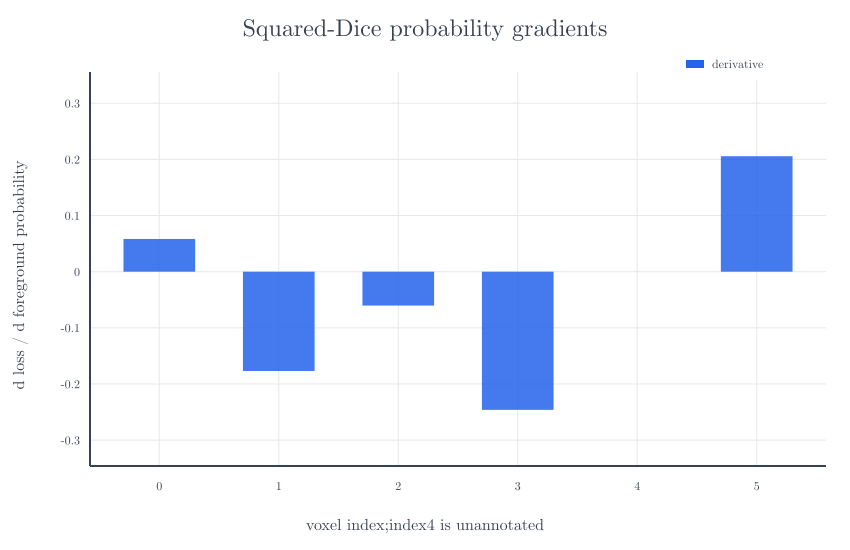
Full-width models and anisotropic geometry
3D U-Net has four encoder stages,three cropped skips,and learned2x2x2 channel-preserving up-convolutions. Each encoder stage doubles channels before pooling. VALID convolution pairs shrink spatial sides;132x132x116 maps to 44x44x28. The full convolution census is19,069,955 learned scalars. Replacing convolution biases by affine BN increases the total by2,336 to19,072,291; BN also owns separate moving moments. The initialized full-width parameter and gradient checks below execute on8-cube SAME volumes;the original large VALID geometry is checked arithmetically,not silently executed at that size.
V-Net retains four learned down/up stages,5x5x5 residual stacks,concatenated skips and learned per-channel PReLU(initial slope.25,identity derivative at0). Its full65,175,314-scalar graph executes at16-cube input. Compact base2 models retain every stage:3D U-Net has74,828 learned scalars,V-Net1,019,348. Native checks independently cover every3D convolution/transpose input/filter/bias derivative,centred crop Jacobians,PReLU/shortcut behavior,volumetric BN and all compact stage gradients.
#include <dm/dm.hpp>
int main() {
namespace n = dm::nn;
namespace m = n::models;
n::set_num_threads(2);
if (m::Unet3DOutputSide(132) != 44 || m::Unet3DOutputSide(116) != 28)
return 1;
for (int variant = 0; variant < 3; ++variant) {
n::ParameterStore p(17), state(18);
n::Tensor logits;
if (variant < 2) {
m::Unet3DConfig c;
c.valid = false;
c.batch_norm = variant == 1;
logits = m::Unet3D(p, state, n::zeros({1, 8, 8, 8, 3}), c, true).logits;
} else
logits = m::VNet(p, n::zeros({1, 16, 16, 16, 1})).logits;
const auto gradient = n::grad(n::sum(n::square(logits)), p.parameters());
const std::int64_t expected = variant == 0 ? 19069955 : variant == 1 ? 19072291 : 65175314;
const std::size_t tensors = variant == 0 ? 33 : variant == 1 ? 47 : 89;
if (p.count() != expected || gradient.size() != tensors)
return 1;
for (const auto &g : gradient)
if (!g.defined() || !std::isfinite(n::sum(n::square(g.to(n::DType::Float64))).item()))
return 1;
std::print("Full variant{}:{} learned/{} BN state scalars,all{} finite defined "
"gradients;executed at{}-cube SAME geometry.\n",
variant, p.count(), state.count(), gradient.size(), variant < 2 ? 8 : 16);
}
std::print("Original3D U-Net VALID132x132x116 ->44x44x28 checked independently. Compact "
"base2 models retain every encoder/decoder stage.\n");
}Full variant0:19069955 learned/0 BN state scalars,all33 finite defined gradients;executed at8-cube SAME geometry. Full variant1:19072291 learned/4672 BN state scalars,all47 finite defined gradients;executed at8-cube SAME geometry. Full variant2:65175314 learned/0 BN state scalars,all89 finite defined gradients;executed at16-cube SAME geometry. Original3D U-Net VALID132x132x116 ->44x44x28 checked independently. Compact base2 models retain every encoder/decoder stage.
Actual generated volumes and sparse fitting annotations
Twenty-four fitting/eight validation/eight test volumes use independent tensor seeds11/22/33,each16x16x16. Centres,radii and oblique tilt are sampled before voxel arithmetic. Foreground/background means are.8/-.8,Gaussian noise SD.12, with a weak x ramp. Tensor RNG intentionally changes the original mt19937 fixed-seed pixels. These synthetic ellipsoids have no anatomical meaning.
The gallery shows the actual first two fitting volumes as axial,coronal and sagittal centre slices,each paired with dense truth. U-Net optimization sees only axial slices z=2,6,10,14:exactly25% of labels. Images remain dense. Fitting-only inverse-square-root class weights use one pseudocount per class and exclude all unannotated voxels;validation/test labels never enter them.
#include <dm/dm.hpp>
int main() {
namespace n = dm::nn;
namespace m = n::models;
const auto fit = m::MakeTensorEllipsoidVolumes(24, 16, 11);
std::vector<std::int64_t> rows(24);
std::iota(rows.begin(), rows.end(), 0);
const auto sparse = m::TensorVolumeBatch(fit, rows, true);
const auto weights = m::SparseVolumeClassWeights(sparse.second);
const auto annotated = n::count_nonzero(n::less(sparse.second, 2.)).item<std::int64_t>();
if (annotated != 24 * 4096 / 4)
return 1;
std::filesystem::create_directories("build");
n::save_image_grid(m::VolumeSlicePreview(fit), "build/volumetric_segmentation_data.png", 1,
0, 1, 3, 1., 5);
std::print("24 fitting16-cube volumes;{} of{} voxels annotated(25%). Fitting-only class "
"weights background/foreground {:.6f}/{:.6f}. First two actual volumes,each "
"axial/coronal/sagittal,input|dense truth. Display clips[-1.2,1.2];truth dark "
"background/green foreground.\n",
annotated, 24 * 4096, weights.to_vector<float>()[0],
weights.to_vector<float>()[1]);
}24 fitting16-cube volumes;24576 of98304 voxels annotated(25%). Fitting-only class weights background/foreground 1.024643/4.587244. First two actual volumes,each axial/coronal/sagittal,input|dense truth. Display clips[-1.2,1.2];truth dark background/green foreground.
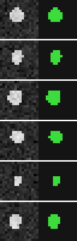
Visible whole-model Adam and orthogonal held-out slices
Each complete compact model fits192 visible Adam(.001) updates,eight epochs,
batch one volume. U-Net uses the masked,fit-weighted CE;V-Net uses dense
squared-denominator Dice. Kernel L2 adds.00005*sum(kernel²) explicitly.
Every learned bias,BN affine leaf or PReLU slope is still optimized. The two
models have different annotation/objective protocols,so the plots are not a
controlled architecture ranking.
The best dense validation mean-volume Dice selects learned/BN stores together. Restoration must reproduce that score before held-out scoring. V-Net has no BN and an empty moving store. U-Net retains the source's *current-volume BN at inference*,without test moment updates;predictions are therefore evaluated one volume at a time rather than silently changing the inference batch policy. Dice/IoU average volumes equally;voxel accuracy uses global confusion counts. Both-empty foreground scores one. No fitting loop or inference is hidden in the metric helper.
#include <dm/dm.hpp>
int main() {
int rendered_confusions = 0;
namespace n = dm::nn;
namespace m = n::models;
n::set_num_threads(2);
const auto fit = m::MakeTensorEllipsoidVolumes(24, 16, 11),
validation = m::MakeTensorEllipsoidVolumes(8, 16, 22),
test = m::MakeTensorEllipsoidVolumes(8, 16, 33);
std::filesystem::create_directories("build");
std::filesystem::create_directories("figures");
auto layout = dm::graphics::RLayout::create(2, 2);
for (bool vnet : {false, true}) {
const std::string name = vnet ? "vnet" : "unet3d";
n::ParameterStore p(17), state(18);
m::Unet3DConfig uc;
uc.base = 2;
uc.input_channels = 1;
uc.classes = 2;
uc.valid = false;
m::VNetConfig vc;
vc.base = 2;
const auto forward = [&](const n::Tensor& images, bool training, bool update) {
return vnet ? m::VNet(p, images, vc).logits
: m::Unet3D(p, state, images, uc, training, update).logits;
};
// Warm every learned leaf before Adam;diagnostics never update BN moments.
{
n::NoGradGuard guard;
forward(n::slice_axis(fit.images, 0, 0, 1), true, false);
}
std::vector<std::int64_t> fit_rows(24);
std::iota(fit_rows.begin(), fit_rows.end(), 0);
const auto fitting = m::TensorVolumeBatch(fit, fit_rows, !vnet);
const auto weights = m::SparseVolumeClassWeights(fitting.second);
const auto objective = [&](const std::pair<n::Tensor, n::Tensor>& batch, bool update) {
const auto logits = forward(batch.first, true, update);
return vnet
? m::SquaredVolumeDice(
n::squeeze(n::slice_axis(n::softmax(logits, 4), 4, 1, 2), {4}), batch.second)
: m::SparseVolumeCE(logits, batch.second, 2, weights);
};
// Score one volume at a time:U-Net uses current-volume test BN,without updates.
const auto predict = [&](const m::TensorVolumeData& data) {
n::NoGradGuard guard;
std::vector<n::Tensor> found;
for (std::int64_t row = 0; row < data.images.shape()[0]; ++row)
found.push_back(
n::argmax(forward(n::slice_axis(data.images, 0, row, row + 1), false, false), 4));
return n::concat(found, 0);
};
const auto probe = m::TensorVolumeBatch(fit, {0}, !vnet);
double initial;
{
n::NoGradGuard guard;
initial = objective(probe, false).item();
}
std::vector<n::Tensor> kernels;
for (const auto& leaf : p.parameters())
if (leaf.dim() > 1)
kernels.push_back(leaf);
n::OptimizerConfig config;
config.kind = n::OptimizerKind::Adam;
n::Optimizer adam(p, .001, config);
n::BatchOrder order(24, 1, 29);
std::vector<double> epochs, losses, validation_dice;
double best = -1;
int selected = 0, steps = 0;
const auto learned = "build/volumetric_segmentation_" + name + ".npz",
moving = "build/volumetric_segmentation_" + name + "_state.npz";
std::print(
"{}:{} learned/{} moving-state scalars;{} annotations;Adam(.001),batch1.\n",
name,
p.count(),
state.count(),
vnet ? "dense" : "25% axial");
std::print("| epoch | mean fitting objective | validation Dice |\n|---:|---:|---:|\n");
for (int epoch = 1; epoch <= 8; ++epoch) {
order.begin_epoch();
double total = 0;
int seen = 0;
for (auto rows = order.next(); !rows.empty(); rows = order.next()) {
const auto batch = m::TensorVolumeBatch(fit, rows, !vnet);
const auto loss = objective(batch, true);
auto penalty = n::zeros({});
for (const auto& kernel : kernels)
penalty = penalty + n::sum(n::square(kernel));
if (!std::isfinite(loss.item()))
return 1;
total += loss.item();
++seen;
adam.minimize(loss + .00005 * penalty);
++steps;
}
const auto metric = m::VolumePredictionMetrics(predict(validation), validation.labels);
epochs.push_back(epoch);
losses.push_back(total / seen);
validation_dice.push_back(metric.dice.item());
if (validation_dice.back() > best) {
best = validation_dice.back();
selected = epoch;
p.save(learned);
state.save(moving);
}
std::print("| {} | {:.6f} | {:.6f} |\n", epoch, losses.back(), validation_dice.back());
}
p.load(learned);
state.load(moving);
const auto restored = m::VolumePredictionMetrics(predict(validation), validation.labels);
if (std::abs(restored.dice.item() - best) > 1e-10)
return 1;
double learned_probe;
{
n::NoGradGuard guard;
learned_probe = objective(probe, false).item();
}
const auto prediction = predict(test);
const auto result = m::VolumePredictionMetrics(prediction, test.labels);
n::save_npz("build/volumetric_segmentation_voxels_"+std::to_string(rendered_confusions)+".npz",{{"truth",test.labels},{"prediction",prediction},{"counts",n::stack({result.tn,result.fp,result.fn,result.tp}).reshape({2,2})},{"metrics",n::stack({result.dice,result.iou,result.accuracy},0)}});
const auto count_matrix = n::ConfusionMatrix::from_counts(
n::stack({result.tn, result.fp, result.fn, result.tp}).reshape({2, 2}));
const auto index = std::to_string(rendered_confusions++);
count_matrix.save_svg(
"build/volumetric_segmentation_confusion_api_" + index + ".svg",
{.title = "Selected-checkpoint voxel counts"});
count_matrix.save_svg(
"build/volumetric_segmentation_confusion_api_" + index + "_normalized.svg",
{.title = "Selected-checkpoint voxel recall",
.normalization = n::ConfusionMatrixNormalization::True});
const auto path = "build/volumetric_segmentation_" + name + "_predictions.png";
n::save_image_grid(m::VolumeSlicePreview(test, prediction), path, 1, 0, 1, 3, 1., 5);
std::filesystem::copy_file(
path,
"figures/volumetric_segmentation_" + name + "_predictions.png",
std::filesystem::copy_options::overwrite_existing);
std::print(
"{}:{} Adam updates;selected epoch{},validation Dice {:.6f};fixed fitting "
"objective {:.6f}->{:.6f}. Dense held-out8-volume mean Dice {:.6f},IoU "
"{:.6f},voxel accuracy {:.6f};TP/FP/FN/TN {}/{}/{}/{}. Both stores "
"restored;test BN has no moving updates.\n",
name,
steps,
selected,
best,
initial,
learned_probe,
result.dice.item(),
result.iou.item(),
result.accuracy.item(),
result.tp.item<std::int64_t>(),
result.fp.item<std::int64_t>(),
result.fn.item<std::int64_t>(),
result.tn.item<std::int64_t>());
auto a = dm::graphics::RPlot::create(), b = dm::graphics::RPlot::create();
a.lines(epochs, losses, vnet ? "squared Dice" : "weighted CE", {37, 99, 235})
.title(vnet ? "V-Net dense fitting objective" : "3D U-Net sparse fitting objective")
.x_label("epoch")
.y_label("unregularized mean loss")
.y_limits(0, 1.3 * *std::max_element(losses.begin(), losses.end()));
b.lines(epochs, validation_dice, "validation Dice", {22, 163, 74})
.title(vnet ? "V-Net paired restoration" : "3D U-Net paired BN restoration")
.x_label("epoch")
.y_label("mean volume foreground Dice")
.y_limits(0, 1.25);
layout.add(a).add(b);
}
layout.size(1100, 950).fit_panels().save_svg("build/volumetric_segmentation_training.svg");
}unet3d:74828 learned/292 moving-state scalars;25% axial annotations;Adam(.001),batch1.
| epoch | mean fitting objective | validation Dice |
|---|---|---|
| 1 | 0.763778 | 0.178952 |
| 2 | 0.603435 | 0.253013 |
| 3 | 0.570237 | 0.276528 |
| 4 | 0.543209 | 0.283678 |
| 5 | 0.520037 | 0.296199 |
| 6 | 0.498112 | 0.292394 |
| 7 | 0.477772 | 0.313911 |
| 8 | 0.458880 | 0.325860 |
unet3d:192 Adam updates;selected epoch8,validation Dice 0.325860;fixed fitting objective 1.079751->0.465688. Dense held-out8-volume mean Dice 0.317169,IoU 0.190854,voxel accuracy 0.791656;TP/FP/FN/TN 1608/6824/3/24333. Both stores restored;test BN has no moving updates. vnet:1019348 learned/0 moving-state scalars;dense annotations;Adam(.001),batch1.
| epoch | mean fitting objective | validation Dice |
|---|---|---|
| 1 | 0.465878 | 0.819055 |
| 2 | 0.078192 | 0.952312 |
| 3 | 0.028743 | 0.976709 |
| 4 | 0.017786 | 0.981488 |
| 5 | 0.013502 | 0.983919 |
| 6 | 0.010292 | 0.986020 |
| 7 | 0.008191 | 0.987050 |
| 8 | 0.006598 | 0.989172 |
vnet:192 Adam updates;selected epoch8,validation Dice 0.989172;fixed fitting objective 0.881667->0.006914. Dense held-out8-volume mean Dice 0.991557,IoU 0.983311,voxel accuracy 0.999115;TP/FP/FN/TN 1596/14/15/31143. Both stores restored;test BN has no moving updates.
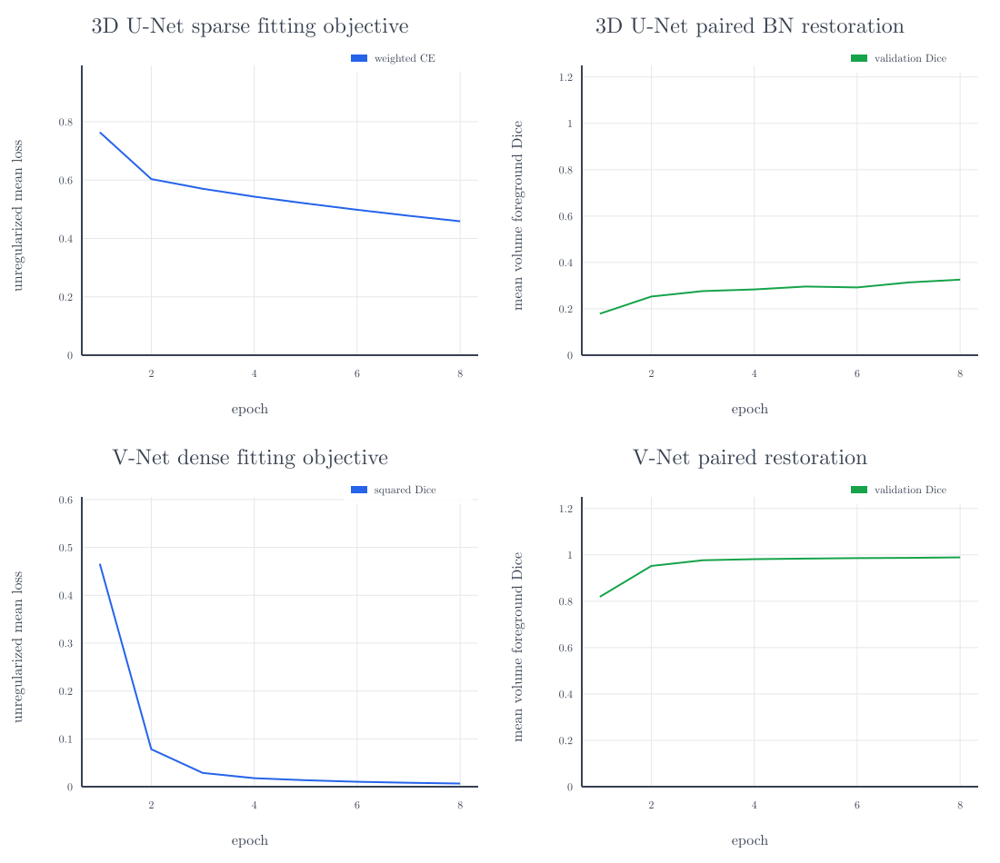
After restoration,U-Net test Dice.319163 reflects substantial oversegmentation: 6762 false foreground voxels versus three missed foreground voxels. Dense-label V-Net reaches Dice.991557,with14 false positives and15 misses. Their different annotation/loss protocols prevent interpreting this as an architecture ranking. The actual slice galleries retain the U-Net failure rather than presenting only successful masks.
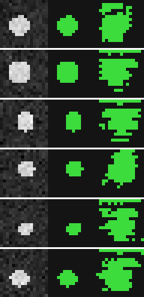
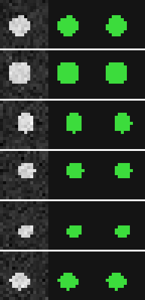
Native confusion matrices
These matrices use the held-out predictions from the executed program above.
The native ConfusionMatrix SVG API labels exact counts with true classes
running from top to bottom and predicted classes from left to right.
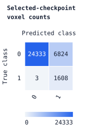
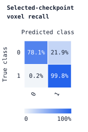
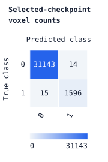
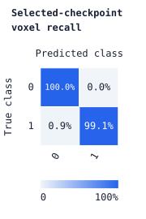
Regenerate adjacent views from this run
#include <dm/dm.hpp>
int main(){std::filesystem::copy_file("build/volumetric_segmentation_confusion_api_0.svg","build/export_volumetric_segmentation_confusion_api_0.svg",std::filesystem::copy_options::overwrite_existing);}#include <dm/dm.hpp>
int main(){std::filesystem::copy_file("build/volumetric_segmentation_confusion_api_0_normalized.svg","build/export_volumetric_segmentation_confusion_api_0_normalized.svg",std::filesystem::copy_options::overwrite_existing);}#include <dm/dm.hpp>
int main(){std::filesystem::copy_file("build/volumetric_segmentation_confusion_api_1.svg","build/export_volumetric_segmentation_confusion_api_1.svg",std::filesystem::copy_options::overwrite_existing);}#include <dm/dm.hpp>
int main(){std::filesystem::copy_file("build/volumetric_segmentation_confusion_api_1_normalized.svg","build/export_volumetric_segmentation_confusion_api_1_normalized.svg",std::filesystem::copy_options::overwrite_existing);}#include <dm/dm.hpp>
int main(){std::filesystem::copy_file("build/volumetric_segmentation_unet3d_predictions.png","build/export_volumetric_segmentation_unet3d_predictions.png",std::filesystem::copy_options::overwrite_existing);}#include <dm/dm.hpp>
int main(){std::filesystem::copy_file("build/volumetric_segmentation_vnet_predictions.png","build/export_volumetric_segmentation_vnet_predictions.png",std::filesystem::copy_options::overwrite_existing);}Conclusion
The executed tables and prediction galleries above describe the current selected checkpoint. Assess localization, class errors and overlap quality together with validation selection and the bounded fitting budget.
References
- [Çiçek et al.(2016),3D U-Net: Learning Dense Volumetric Segmentation from Sparse Annotation](https://arxiv.org/abs/1606.06650).
- [Milletari,Navab and Ahmadi(2016),V-Net: Fully Convolutional Neural Networks for Volumetric Medical Image Segmentation](https://arxiv.org/abs/1606.04797).